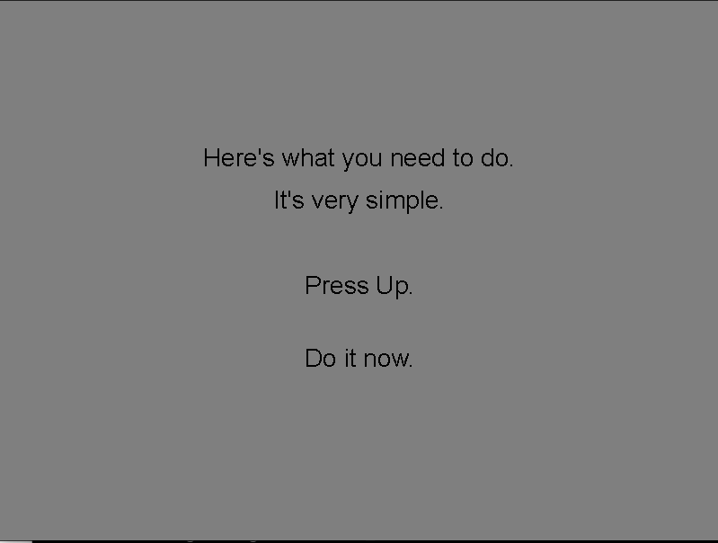
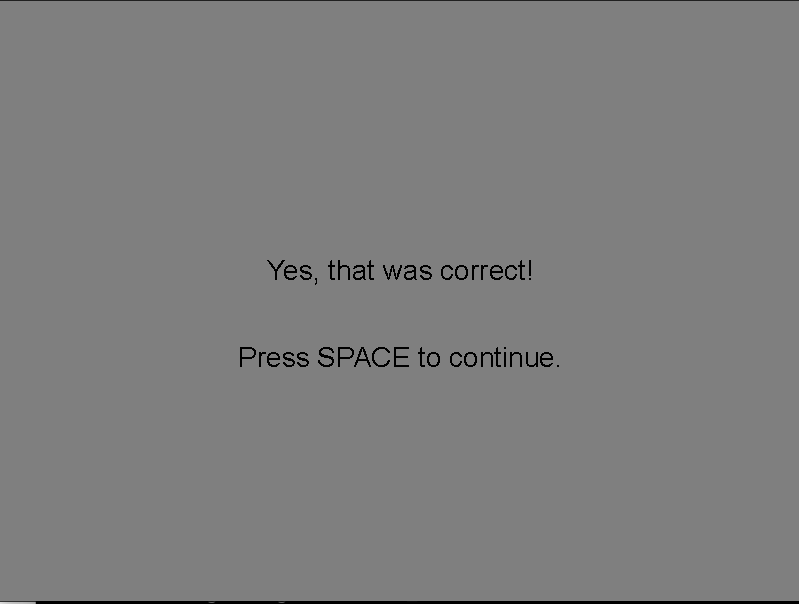

Text displays#
In this example we show text to the observer, asking him to press a button. When pressed, the observer gets feedback. Which button to press is determind randomly.
In the code we have separated the functions related to displaying
text into a module called text_displays.py.
The function display_text is imported from this module.
In later examples and templates this module will be included as well.
Install requirements#
Apart from HRL, you need the Pillow (PIL) library to draw text.
You need to install this library in your python environment, for example with pip
pip install Pillow
Main script#
import sys
import numpy as np
from hrl import HRL
from text_displays import display_text
# Define window parameters
SHAPE = (600, 800) # Desired shape of the drawing window (height, width)
CENTER = (SHAPE[0] // 2, SHAPE[1] // 2) # Center of the drawing window
BACKGROUND = 0.5
DIRECTIONS = ["Left", "Right", "Up", "Down"]
# random generator
rng = np.random.default_rng()
def show_instructions(ihrl, direction):
"""Display instructions to the participant
Parameters
----------
ihrl : hrl-object
hrl-interface object to use for display
direction : str
which key the participant should press
"""
lines = [
"Here's what you need to do.",
"It's very simple.",
"",
f"Press {direction}.",
"",
"Do it now.",
]
display_text(ihrl=ihrl, text=lines)
return
def show_correct(ihrl):
"""Display message that participant pressed the correct button
Parameters
----------
ihrl : hrl-object
hrl-interface object to use for display
"""
lines = [
"Yes, that was correct!",
"",
"Press SPACE to continue.",
]
display_text(ihrl=ihrl, text=lines)
def process_response(ihrl, direction):
"""Process participant's keypress
Parameters
----------
ihrl : hrl-object
hrl-interface object to use for display
direction : str
which key the participant should press
Returns
-------
bool
whether keypress was correct
Raises
------
SystemExit
if participant/experimenter terminates experiment by pressing "Escape"
"""
press, _ = ihrl.inputs.readButton()
if press in ("Escape"):
# Raise SystemExit Exception
sys.exit("Participant terminated experiment.")
elif press == direction:
return True
else:
return False
def experiment_main(ihrl):
"""Run adjustment experiment on specified display
Parameters
----------
ihrl : hrl-object
hrl-interface object to use for display
Raises
------
SystemExit
if participant/experimenter terminates experiment
"""
while True:
# Main loop
try:
# Pick a direction, randomly
idx = rng.integers(low=len(DIRECTIONS))
direction = DIRECTIONS[idx]
# Display text
show_instructions(ihrl, direction)
# Wait for key
response_correct = False
while not response_correct:
response_correct = process_response(ihrl, direction)
# Show correct response screen
show_correct(ihrl)
ihrl.inputs.readButton(btns="Space")
except SystemExit as e:
# Cleanup
print("Exiting...")
ihrl.close()
raise e
if __name__ == "__main__":
# Create HRL interface object
ihrl = HRL(
graphics="gpu", # Use the default GPU as graphics device driver
# graphics='datapixx', # In the lab, we use the datapixx device driver
inputs="keyboard", # Use the keyboard as input device driver
# inputs="responsepixx", # In the lab, we use the responsepixx input device
hght=SHAPE[0],
wdth=SHAPE[1],
scrn=1, # Which screen (monitor) to use
fs=False, # Fullscreen?
bg=BACKGROUND, # background intensity (black=0.0; white=1.0)
)
experiment_main(ihrl)
ihrl.close()
Module text-displays.py#
import numpy as np
from PIL import Image, ImageDraw, ImageFont
def create_text_texture(text,
intensity_text=0.0,
intensity_background=0.5,
fontsize=28,
align="center",
):
""" Draw given text into a (numpy) image-array
It uses Pillow in mode "F", that is, a mode using floating point
values and only one channel (grayscale).
Parameters
----------
text : str
Text to draw
intensity_text : float, optional
intensity of text in range (0.0; 1.0), by default 0.0
intensity_background : float, optional
intensity value of background in range (0.0; 1.0), by default 0.5
fontsize : int, optional
font size, by default 36
align : "left", "center" (default), "right"
alignment of text, by default "center"
Returns
-------
numpy array
containing the text as an image
"""
# Get font
font = ImageDraw.ImageDraw.font
if not font:
try:
# Not all machines will have Arial installed...
font = ImageFont.truetype(
"arial.ttf",
fontsize,
encoding="unic",
)
except OSError:
font = ImageFont.load_default()
# Determine dimensions of total text
n_lines = len(text.split("\n"))
max_length = 0
for line in text.split("\n"):
max_length = max(int(font.getlength(line)), max_length)
_, top, _, bottom = font.getbbox(text)
text_width = max_length
text_height = int(top + bottom) * n_lines
text_shape = (text_height, text_width)
# Instantiate grayscale image of correct shape (in pixels)
img = Image.new("F", (text_width, text_height), intensity_background)
draw = ImageDraw.Draw(img)
# Draw text into this image
draw.text(
(0, 0),
text,
fill=intensity_text,
font=font,
align=align,
)
return img
def display_text(
ihrl,
text,
fontsize=28,
intensity_text=0.0,
intensity_background=None,
):
"""Display a screen with given text, waiting for participant to press button
Text will be center horizontally.
Parameters
----------
ihrl : hrl
HRL-interface object to use for display and input
text : str, list[str]
text to display, can be multiple lines
fontsize : int, optional
font size, by default 36
intensity_text : float, optional
intensity of the text in range (0.0; 1.0), by default 0.0
intensity_background : float, optional
intensity of the background in range (0.0; 1.0), if None (default): ihrl.background
"""
bg = ihrl.background if (intensity_background is None) else intensity_background
# Clear current screen
ihrl.graphics.flip()
# Draw each line of text, one at a time
textures = []
for line_nr, line in enumerate(text):
# Generate image-array, OpenGL texture
if line == "":
line = " "
text_arr = create_text_texture(
text=line,
intensity_text=intensity_text,
intensity_background=bg,
fontsize=fontsize,
)
textline = ihrl.graphics.newTexture(text_arr)
# Determine position where to draw
window_shape = (ihrl.height, ihrl.width)
text_pos = (
(window_shape[1] - textline.wdth) // 2,
((window_shape[0] // 2) - ((len(text) // 2) - line_nr) * (textline.hght + 10)),
)
# Draw the line
textline.draw(pos=text_pos)
# Display
ihrl.graphics.flip()
return
Screenshots#
First screen shows 
After pressing Up… 